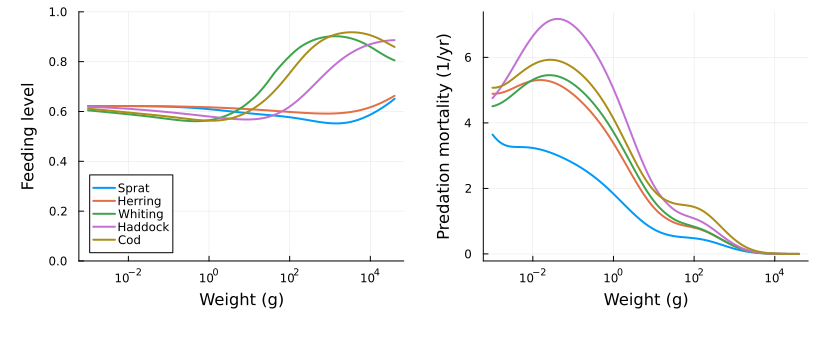
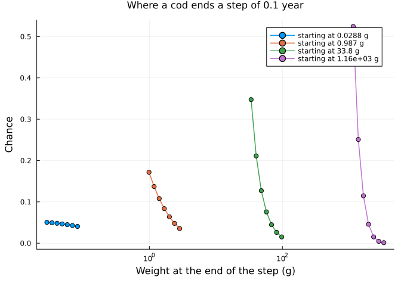
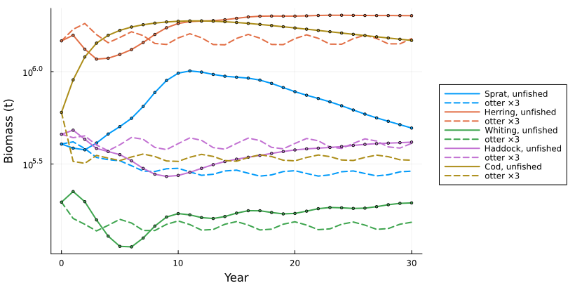
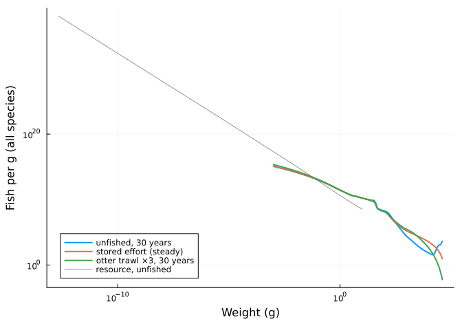

A size-spectrum fish community: the mizer model as projection nets
Simon Frost
- Fish by weight, eating by size
- What a fish does in a year
- mizer’s step as a projection matrix
- Pools with a value for each predator class
- Comparison with mizer
- Fishing and the size spectrum
- What cannot be written this way, and what was not
- Comparison with LeMans
- What is measured and what is assumed
- Where this model and its sources part
- Sources read
- References
ENV["GKSwstype"] = "100"
using MatrixCommunityModels
using LinearAlgebra, Printf
using Plots
BLAS.set_num_threads(1)Fish by weight, eating by size
In a size-spectrum model every fish is described by its species and its weight, and what it eats is set by size: a predator eats prey about a hundredth of its weight, whatever their species, as far as an interaction matrix allows. How fast a fish grows depends on how much it finds to eat, and how fast it dies on how many larger fish are hunting. The R package mizer (Scott, Blanchard & Andersen 2014) solves such models for many species and a background resource of plankton, and ships a North Sea model of 12 species (NS_params, after Blanchard et al. 2014).
This vignette writes that model as projection nets, one per species and one for the resource, joined by pools, and checks it against mizer 3.4.0 run in R on its own data (test/reference/R/run_mizer_reference.R). The equations, defaults and the order of operations were read from mizer’s R and C++ source. The LeMans vignette built another North Sea model in which fish are counted by length; the two are compared at the end.
p = mizer_parameters()
d = MIZER_NORTH_SEA
println("species w_max (g) w_mat (g) β (PPMR) σ R_max (1/yr) fleet")
for (i, sp) in enumerate(p.species)
@printf("%-8s %10.1f %10.1f %9.0f %4.1f %12.3g %s\n", d.names[i], d.w_max[i], d.w_mat[i], d.beta[i],
d.sigma[i], d.R_max[i], d.gear[i])
end
@printf("fish classes %d (%.3g g to %.4g g), all classes %d (from %.3g g), time step %.1f year\n",
length(p.w), p.w[1], p.w[end], length(p.w_full), p.w_full[1], p.dt)species w_max (g) w_mat (g) β (PPMR) σ R_max (1/yr) fleet
Sprat 33.0 13.0 51076 0.8 7.38e+11 industrial
Sandeel 36.0 4.0 398849 1.9 4.1e+11 industrial
N.pout 100.0 23.0 22 1.5 1.05e+13 industrial
Herring 334.0 99.0 280540 3.2 1.11e+12 pelagic
Dab 324.0 21.0 191 1.9 1.12e+10 beam
Whiting 1192.0 75.0 22 1.5 5.48e+11 otter
Sole 866.0 78.0 381 1.9 3.87e+10 beam
Gurnard 668.0 39.0 283 1.8 1.65e+12 otter
Plaice 2976.0 105.0 113 1.6 4.08e+14 beam
Haddock 4316.5 165.0 558 2.1 1.84e+12 otter
Cod 39851.3 1606.0 66 1.3 8.26e+09 otter
Saithe 39658.6 1076.0 40 1.1 1.12e+11 otter
fish classes 100 (0.001 g to 3.985e+04 g), all classes 226 (from 2.12e-13 g), time step 0.1 yearWeight classes are equally spaced in log weight: 100 for the fish, from the egg weight of 1 mg to the largest asymptotic weight (cod and saithe, 40 kg), and 126 more below them that only the resource occupies. Every species uses all 100 fish classes; fish do not grow beyond their maximum weight because there all their surplus energy goes into reproduction.
What a fish does in a year
mizer follows the number density $N_i(w)$ of each species by weight with the McKendrick–von Foerster equation $\frac{\partial N_i}{\partial t} + \frac{\partial (g_i N_i)}{\partial w} = -\mu_i N_i,$ with eggs entering at the smallest weight. The rates come from feeding:
- encounter: $E_i(w) = \gamma_i w^{q} \sum_{w_p} \phi_i(w/w_p)\, w_p \big(\theta_{i,R} N_R(w_p) + \sum_j \theta_{ij} N_j(w_p)\big)\,\Delta w_p$, with $\phi_i(r) = \exp(-(\ln r - \ln\beta_i)^2/(2\sigma_i^2))$ the preference for prey a factor $r$ smaller, and $\theta$ the interaction matrix;
- feeding level $f = E/(E + h w^n)$, a Holling type II response, and energy for growth and reproduction $e = \alpha f h w^n - k_s w^p$;
- reproduction gets a share $\psi(w)$ of $e$, which rises from zero below maturity to one at the maximum weight; growth is $g = (1 - \psi) e$, or zero if $e < 0$;
- mortality $\mu = \mu_p + \mu_b + F$: predation, a constant external mortality, and fishing by a fleet with knife-edge selectivity;
- eggs: $R_{di} = 0.5\,\epsilon \sum \psi e N \Delta w / w_\text{egg}$ a year, reduced to $R_{dd} = R_{di}/(1 + R_{di}/R_\text{max})$ (Beverton–Holt).
Predation mortality is the other side of encounter: each predator eats the prey of each class in proportion to $\phi$, and the part of its encounter it does not eat when satiated spares the prey, $\mu_{p,j}(w_p) = \sum_i \theta_{ij} \sum_w \phi_i(w/w_p)\,(1 - f_i(w))\,\gamma_i w^q N_i(w)\,\Delta w.$
c = mizer_community(p)
n0 = state_vector(c, mizer_state(p)...)
stored = (effort = d.effort,)
R = mizer_rates(p, c, n0, stored)
shown = (:sprat, :herring, :whiting, :haddock, :cod)
labels = Dict(zip(p.species, d.names))
a = plot(; xscale = :log10, xlabel = "Weight (g)", ylabel = "Feeding level", legend = :bottomleft, ylims = (0, 1))
b = plot(; xscale = :log10, xlabel = "Weight (g)", ylabel = "Predation mortality (1/yr)", legend = false)
for sp in shown
plot!(a, p.w, R[sp].feeding_level; lw = 2, label = labels[sp])
plot!(b, p.w, R[sp].pred_mort; lw = 2)
end
plot(a, b; layout = (1, 2), size = (820, 340), bottom_margin = 5Plots.mm, left_margin = 5Plots.mm)
These are the feeding level and the predation mortality of five species at the stored state, read from the two pools described below.
mizer’s step as a projection matrix
mizer’s default scheme (method = "euler") computes every rate from the state at the start of a step of 0.1 year and then takes one implicit upwind step for the fish: $\Big(1 + \frac{g_j \Delta t}{\Delta w_j} + \mu_j \Delta t\Big) n'_j - \frac{g_{j-1}\Delta t}{\Delta w_j}\, n'_{j-1} = n_j,$ with the eggs $R_{dd} \Delta t/\Delta w_1$ added in the first class. The system is lower bidiagonal, and mizer solves it by forward substitution. With the rates held fixed, its solution is a matrix applied to the state. In numbers per class, $N_j = n_j \Delta w_j$, a fish of class $k$ ends the step in class $j \ge k$ with chance $T_{jk} = \frac{1}{b_k} \prod_{m=k+1}^{j} \frac{g_{m-1} \Delta t}{\Delta w_{m-1}\, b_m}, \qquad b_m = 1 + \frac{g_m \Delta t}{\Delta w_m} + \mu_m \Delta t.$ An implicit step lets a fish pass through several classes in one step, each with a geometric chance, which is why it stays stable with long steps. So mizer’s step is exactly a projection matrix whose entries depend on the state through the rates. That is what a responsive projection net is, and mizer_fish writes each species as one:
life = ValuedProjectionNet(cells,
:staying => [(c => c) => 1.0 for c in cells],
:growing => [(cells[k] => cells[j]) => 1.0 for k in 1:m for j in (k + 1):m],
:spawning => [(cells[k] => cells[j]) => 1.0 for k in spawners for j in 1:m])
net = births(respond(life,
:staying => ctx -> step(ctx).T, # the matrix T, from the rates of this step
:growing => ctx -> step(ctx).T,
:spawning => eggs), :spawning) # T[j, 1] dt times each spawner's share of R_ddA response can return a whole matrix laid out like the net’s projection matrix; each transition reads it at its own entries. The eggs enter the first class and die and grow in the step they are laid, as in mizer, so spawning reaches every class, in proportion to T[j, 1].
cod = R[:cod]
T = MatrixCommunityModels._mizer_step_matrix(p, cod.e_growth, cod.mort)
classes = [20, 40, 60, 80]
plot(; xscale = :log10, xlabel = "Weight at the end of the step (g)", ylabel = "Chance", legend = :topright,
title = "Where a cod ends a step of 0.1 year", titlefontsize = 11)
for k in classes
plot!(p.w[k:min(k + 6, 100)], T[k:min(k + 6, 100), k]; marker = :circle, lw = 1.5,
label = @sprintf("starting at %.3g g", p.w[k]))
end
plot!()
The resource is a component of its own, mizer_resource, with one stage per class and mizer’s semichemostat: with its growth rate $r$, capacity $c$ and mortality $\mu$ held fixed over the step, a share $e^{-(r+\mu)\Delta t}$ remains and $r c \Delta w (1 - e^{-(r+\mu)\Delta t})/(r + \mu)$ is added, the exact solution mizer uses, written as a transition and an inflow.
Pools with a value for each predator class
The encounter and predation sums are what the species share. mizer computes both with fast Fourier transforms, which are circular convolutions over the classes; here they are written out as sums (the same arithmetic, without the transforms), behind two pools with one value for each of the 1200 predator classes (12 species × 100 classes):
prey: the prey biomass each predator class meets, $\sum_{w_p} \phi_i(w/w_p)\, w_p\, \theta N(w_p)$, to which every species and the resource contribute;consumers: the search volume of the predators of each class, $\gamma_i w^q N_i(w)$, each species contributing its own.
From these every species finds its encounter and feeding level, and every species and the resource find how fast they are eaten. No species refers to another.
pools = pool_totals(c, n0, stored)
(species = species_names(c), pools = pool_names(c), values_per_pool = length(pools.prey), states = length(c))(species = [:sprat, :sandeel, :n_pout, :herring, :dab, :whiting, :sole, :gurnard, :plaice, :haddock, :cod, :saithe, :resource], pools = [:prey, :consumers], values_per_pool = 1200, states = 1426)Comparison with mizer
ref_dir = joinpath(pkgdir(MatrixCommunityModels), "test", "reference")
table(f) = (ls = [split(l, ",") for l in readlines(joinpath(ref_dir, f))]; (String.(ls[1]), ls[2:end]))
number(x) = parse(Float64, x)
relative(a, b) = b == 0 ? abs(a) : abs(a / b - 1)
named = Dict(zip(d.names, p.species))
h, rates = table("mizer_rates.csv")
rate_gap = Dict(name => maximum(relative(getfield(R[named[r[1]]], Symbol(name))[parse(Int, r[2])],
number(r[findfirst(==(name), h)])) for r in rates)
for name in ("encounter", "feeding_level", "e_growth", "e_repro", "mort"))
_, repro = table("mizer_reproduction.csv")
rdd_gap = maximum(relative(R[named[r[1]]].rdd, number(r[3])) for r in repro)
one_step = project(c, n0, [stored])
_, step = table("mizer_step.csv")
step_gap = maximum(relative(one_step[named[r[1]]][2, parse(Int, r[2])] / p.dw[parse(Int, r[2])], number(r[3])) for r in step)
for (k, v) in sort(collect(rate_gap))
@printf("%-14s at the stored state: %.1e\n", k, v)
end
@printf("R_dd: %.1e; numbers after one step: %.1e\n", rdd_gap, step_gap)e_growth at the stored state: 3.8e-14
e_repro at the stored state: 3.5e-14
encounter at the stored state: 2.9e-14
feeding_level at the stored state: 1.3e-14
mort at the stored state: 2.3e-14
R_dd: 9.0e-15; numbers after one step: 1.8e-14Every rate at the stored state, and the numbers in every class after one step, agree with mizer to rounding. Predation mortality agrees to within 1e-12 of its largest value (test/test_mizer.jl); in the largest classes, which almost nothing eats, mizer’s Fourier transforms leave rounding noise where the sums here give zero or noise of their own, so a relative comparison there is meaningless.
Runs
mizer documents the stored state as the steady state under the stored effort (pelagic fleet 1, beam and otter trawls 0.5, industrial 0). From it, the community was run in R for 20 years at that effort, 30 years without fishing, and 30 years with the otter trawl at three times its effort; and findSteadyState() was run at the stored effort and without fishing. That function projects with the full dynamics, step by step, until the state settles: after 1.5 years at the stored effort (it is already close) and after 55.5 years without fishing. The same runs here:
_, runs = table("mizer_runs.csv")
otter = merge(d.effort, (otter = 1.5,))
cases = Dict("stored_effort" => (20, d.effort), "unfished" => (30, (;)), "otter_1.5" => (30, otter))
sols = Dict(name => project(c, n0, mizer_environment(years; effort)) for (name, (years, effort)) in cases)
function run_gap(name)
B = mizer_biomass(p, sols[name])
maximum(relative(B[10 * parse(Int, r[2]) + 1, findfirst(==(named[r[3]]), p.species)], number(r[4]))
for r in runs if r[1] == name)
end
_, steady = table("mizer_steady.csv")
_, states = table("mizer_states.csv")
function state_gap(run, n)
worst = 0.0
for r in states
r[1] == run || continue
sp = r[2] == "Resource" ? :resource : named[r[2]]
j = parse(Int, r[3])
width = sp === :resource ? p.dw_full[j] : p.dw[j]
theirs = number(r[4]) * width
theirs > 1e-6 * maximum(n[c.layout[sp]]) || continue # classes that hold something
worst = max(worst, relative(n[c.layout[sp]][j], theirs))
end
return worst
end
settled = Dict(r[1] => round(Int, 10 * number(r[2])) for r in steady)
steady_sols = Dict(case => project(c, n0, mizer_environment(settled[case] / 10; effort = case == "unfished" ? (;) : d.effort))
for case in keys(settled))
for name in ("stored_effort", "unfished", "otter_1.5")
@printf("%-14s %3d years, yearly biomass of every species: %.1e; final state: %.1e\n", name, cases[name][1],
run_gap(name), state_gap(name, sols[name].u[end, :]))
end
for case in ("stored_effort", "unfished")
@printf("findSteadyState, %-14s (%3d steps): state %.1e\n", case, settled[case],
state_gap("steady_" * case, steady_sols[case].u[end, :]))
endstored_effort 20 years, yearly biomass of every species: 6.0e-14; final state: 1.0e-13
unfished 30 years, yearly biomass of every species: 2.7e-13; final state: 1.9e-12
otter_1.5 30 years, yearly biomass of every species: 2.5e-13; final state: 3.8e-13
findSteadyState, stored_effort ( 15 steps): state 7.2e-14
findSteadyState, unfished (555 steps): state 1.4e-12The biomass of every species in every year, and the numbers in every class at the end of each run and at both steady states, agree with mizer to 2e-12 or better.
years = 0:30
B0 = mizer_biomass(p, sols["unfished"]) ./ 1e6
Bo = mizer_biomass(p, sols["otter_1.5"]) ./ 1e6
plot(; xlabel = "Year", ylabel = "Biomass (t)", yscale = :log10, legend = :outerright, size = (820, 420))
for (k, sp) in enumerate(shown)
i = findfirst(==(sp), p.species)
plot!(years, B0[1:10:end, i]; color = k, lw = 2, label = "$(labels[sp]), unfished")
plot!(years, Bo[1:10:end, i]; color = k, lw = 2, ls = :dash, label = "otter ×3")
r = [x for x in runs if x[1] == "unfished" && x[3] == d.names[i]]
scatter!(parse.(Int, getindex.(r, 2)), number.(getindex.(r, 4)) ./ 1e6; color = k, ms = 2, label = "")
end
plot!()
The lines are this package, the points mizer (unfished). The table below compares the species at the end of the runs.
Fishing and the size spectrum
spectrum(n) = [sum(n[c.layout[sp]][j] for sp in p.species) / p.dw[j] for j in 1:100]
plot(p.w, spectrum(sols["unfished"].u[end, :]); xscale = :log10, yscale = :log10, lw = 2, label = "unfished, 30 years",
xlabel = "Weight (g)", ylabel = "Fish per g (all species)", legend = :bottomleft)
plot!(p.w, spectrum(n0); lw = 2, label = "stored effort (steady)")
plot!(p.w, spectrum(sols["otter_1.5"].u[end, :]); lw = 2, label = "otter trawl ×3, 30 years")
resource = sols["unfished"][:resource][end, :] ./ p.dw_full
plot!(p.w_full[resource .> 0], resource[resource .> 0]; color = :grey, ls = :dot, label = "resource, unfished")
The fish spectrum (all species together) continues the resource spectrum to larger weights. The three runs differ most among the large fish, which the trawls select.
final(sol) = mizer_biomass(p, sol)[end, :] # biomass of each species at the end of a run
rel_otter = final(sols["otter_1.5"]) ./ final(sols["unfished"])
rel_stored = final(steady_sols["stored_effort"]) ./ final(steady_sols["unfished"])
println("species stored effort / unfished (steady) otter ×3 / unfished (30 years)")
for (i, sp) in enumerate(p.species)
@printf("%-8s %20.3f %30.3f\n", d.names[i], rel_stored[i], rel_otter[i])
endspecies stored effort / unfished (steady) otter ×3 / unfished (30 years)
Sprat 1.290 0.584
Sandeel 1.003 0.767
N.pout 0.961 0.937
Herring 0.776 0.751
Dab 0.622 0.436
Whiting 0.904 0.786
Sole 0.811 0.636
Gurnard 0.604 0.068
Plaice 0.831 1.515
Haddock 1.016 0.985
Cod 0.497 0.225
Saithe 0.816 0.627At the steady state of the stored effort cod has half its unfished biomass, and sprat 29% more than unfished, presumably because there are fewer of its predators. After 30 years with the otter trawl at three times its effort, gurnard is at 7% and cod at 22% of the unfished biomass, while plaice, which the otter trawl does not catch, has half as much again.
What cannot be written this way, and what was not
Every operation of mizer’s default scheme is written above: the rates from the state at the start of the step, the exact resource step, and the implicit upwind step as a matrix. mizer 3.4.0 also offers second-order methods (method = "predictor_corrector" or "tr_bdf2"), which first take a provisional step, recompute the rates at its end and then step again with the averaged rates, and an optional flux limiter. A projection net evaluates its responses once per step at the state at its start, so these would need two sub-steps per step with the provisional state passed between them; they were not written, and NS_params does not use them. Diffusion in weight, also optional and off here, makes the system tridiagonal; its solution is again a matrix, so it could be written in the same way.
Comparison with LeMans
Both models describe the North Sea fish community by species and size, link the species only through predation by size, and need pools with a value for each predator size class (250 classes in LeMans, 1200 here). They differ in what drives growth and in how the step is taken:
- Growth. In LeMans fish grow as von Bertalanffy says, whatever they eat; a predator’s ration is what that growth requires, and predation only kills prey. In mizer growth is the energy a fish has left after metabolism and reproduction, so it falls when food is short: more predators mean slower growth of the predators as well as more deaths of the prey.
- Food. LeMans adds a constant amount of food outside the model; mizer has a resource spectrum that is eaten down and grows back.
- Size. LeMans counts fish by length in 32 classes of equal width; mizer by weight in 100 classes of equal width in log weight, so that a predator-prey mass ratio is a shift by a fixed number of classes and the sums are convolutions.
- The step. LeMans takes an explicit step: survivors of exp(−Z), then a fixed share of each class moves up one class, so a fish never crosses more than one class a step. mizer takes an implicit step, in which a fish can cross several classes; written as a projection matrix it is lower triangular rather than bidiagonal.
- Recruitment and fishing. LeMans has hockey-stick recruitment once a year and logistic selectivity in length; mizer Beverton–Holt recruitment every step and knife-edge selectivity in weight.
With the otter trawl alone LeMans gave a few per cent more of every species the trawl does not catch. The run here is not the same experiment (the other fleets keep fishing, and it is compared with no fishing at all), and in it plaice gains while most species lose.
What is measured and what is assumed
| Quantity | Source |
|---|---|
| Maximum and maturation weights, von Bertalanffy $k$ | NS_params (Blanchard et al. 2014), from North Sea data; not checked against the originals here |
| Predator-prey mass ratio $\beta$ and width $\sigma$ by species | NS_params, from diet data as far as mizer’s documentation says |
| Interaction matrix $\theta$ | NS_params (inter), from survey overlap (Blanchard et al. 2014) |
| $R_\text{max}$ and the resource capacity $\kappa$ | calibrated by Blanchard et al. (2014) |
| $\gamma$, $h$, $k_s$, $z_0$ by species | derived by mizer from the species’ size and $k$, and stored with NS_params |
| $\alpha = 0.6$, exponents $n = 2/3$, $p = 0.7$, $q = 0.8$, $\epsilon$ | mizer defaults stored with NS_params |
| Fleets, knife-edge weights, catchability 1 | NS_params |
| Efforts (stored: pelagic 1, beam and otter 0.5; otter ×3; none) | stored with NS_params, or chosen for illustration |
Where this model and its sources part
- The model is mizer 3.4.0’s, as
NS_paramsholds it; Blanchard et al. (2014) was read only in its abstract, and Scott et al. (2014) does not describe the numerical scheme, which was read from the source. - The sums that mizer evaluates by Fourier transforms are evaluated directly, as the same circular convolutions; only rounding differs. mizer does not pad its transforms, so the convolution wraps round: a predator also “meets” prey up to 99 classes heavier than itself, weighted by its kernel at a predator/prey mass ratio near $10^{9.75}$ or more. For most species that weight is below 1e-13 of the kernel’s peak, but for sandeel it is 3e-6 and for herring, whose kernel is wide ($\sigma = 3.2$), 8e-3. The sums here keep these terms, so as to reproduce mizer; whether they were intended is not known, and their effect on the results was not measured.
findSteadyState()is reproduced by projecting for the number of steps it took. The deprecatedsteady()instead holds reproduction and the resource fixed while it projects, then changes $R_\text{max}$ or $\epsilon$ and the resource rate so that the final state is a steady state of the changed model. That is a calibration of the parameters, not a run of the model, and is not reproduced.- The North Sea data are mizer’s and are distributed under the GPL-3, like those of LeMaRns; they are in
data/mizerwith a notice (data/mizer/LICENSE.txt). The rest of this package is MIT.
Sources read
The R and C++ source of mizer 3.4.0 (CRAN tarball) was read where it bears on this model: project, project_simple, project_n_no_diffusion and inner_project_loop (C++), the transport coefficients, the rate functions (mizerEncounter, mizerFeedingLevel, mizerEReproAndGrowth, mizerERepro, mizerEGrowth, mizerPredRate, mizerPredMort, mizerFMort, mizerMort, mizerRDI, BevertonHoltRDD, mizerResourceMort), resource_semichemostat, setPredKernel and the lognormal kernel, the grid set-up of emptyParams, the maturity and reproduction set-up of setReproduction, the selectivity functions, findSteadyState, project_until_settled and tune_steady_project, and the documentation of its data sets. Scott, Blanchard & Andersen (2014) was read in full with its supplement. Blanchard et al. (2014) was read only in its abstract (the publisher refused the full text).
References
Blanchard, J. L., Andersen, K. H., Scott, F., Hintzen, N. T., Piet, G. & Jennings, S. (2014). Evaluating targets and trade-offs among fisheries and conservation objectives using a multispecies size spectrum model. Journal of Applied Ecology 51, 612-622. https://doi.org/10.1111/1365-2664.12238
Delius, G. W., Scott, F., Blanchard, J. L., Andersen, K. H., Southwell, R. et al. (2026). mizer: Dynamic Multi-Species Size Spectrum Modelling. R package version 3.4.0, GPL-3. https://CRAN.R-project.org/package=mizer
Scott, F., Blanchard, J. L. & Andersen, K. H. (2014). mizer: an R package for multispecies, trait-based and community size spectrum ecological modelling. Methods in Ecology and Evolution 5, 1121-1125. https://doi.org/10.1111/2041-210X.12256